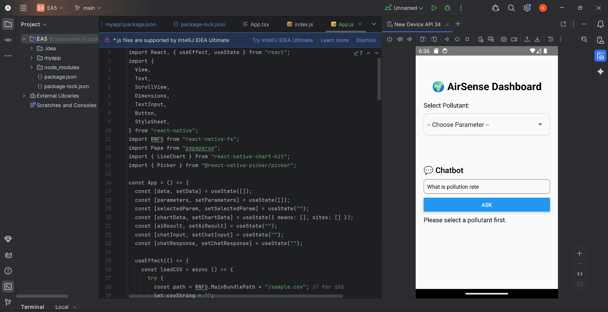

Cybersecurity Internship at Pondicherry Cyber Crime Unit
Duration: 06/06/2025 - 26/06/2025
This was a valuable government internship that provided hands-on experience in cybersecurity, focusing on practical skills and tools essential for cybercrime investigation. I collaborated with law enforcement on real-world cases, gaining insight into professional investigation techniques.
Skills & Tools Learned
- Linux Networking & System Administration Commands
- Human Resource Handling & Team Collaboration
- Cybercrime Investigation Techniques

AirSense Dashboard 🌍[Crossplatform Development using React Native]
Github repository
AirSense Dashboard is a simple yet powerful React Native mobile application designed for Android to visualize and query air quality data. The app reads pollution data from a local CSV file, presents it in an interactive line chart, and allows users to ask basic questions about the data through a simple chatbot.
Core Competencies

WhatsApp Automation using Python
Github repository
Developed a WhatsApp automation tool using Python libraries like PyWhatKit and PyAutoGUI. This project enabled automated messaging, scheduling, and interaction with users, enhancing my skills in web automation and API integration for efficient user engagement.
Skills Acquired